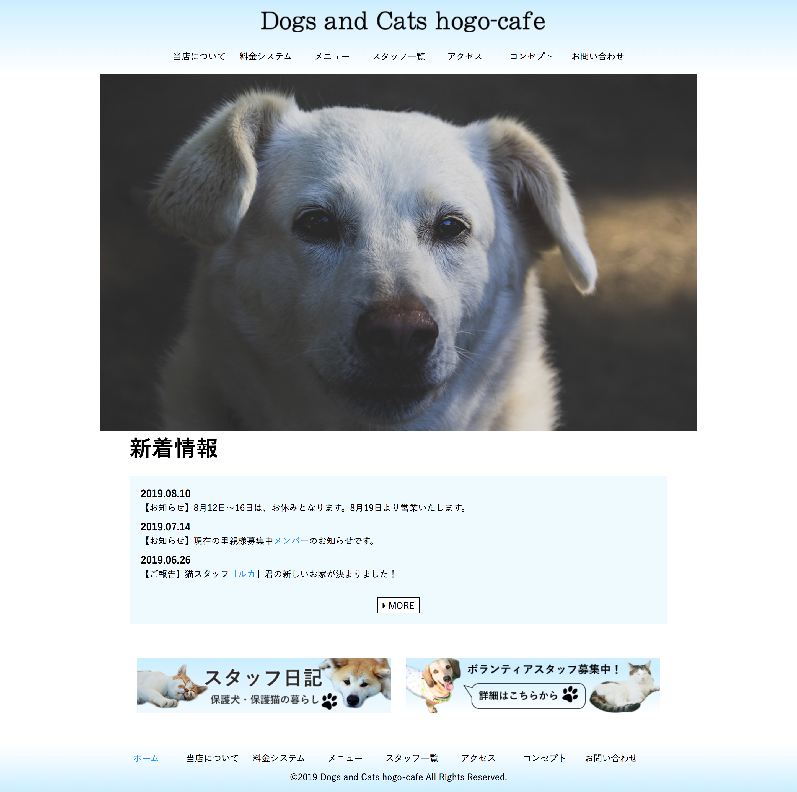

- 
職業訓練校受講時に作成しました。架空の保護犬・保護猫カフェのサイトになります。講師に教えてもらいながら、デザイン〜コーディングまで全て自分で行いました。Photoshopにてデザインカンプを作成、Dreamweaverにてコーディング。レスポンシブにも対応できるようコードを書くのが難しかったです。
使用ツール：Dreamweaver・Photoshop
制作時間：調べて書く 分 -
職業訓練校受講時にグループ(3人)で制作したサイトになります。実際にクライアントから依頼をもらい要件定義に沿って制作しました。newsとContactページのデザイン〜コーディングを担当しました。その他に全体のスケジュール管理、メンバーの進捗管理、コードチェックを行いました。複数人での制作が初めてだったので、円滑にコミュニケーションがとれるようSlackを使用することを提案しました。
使用ツール：Dreamweaver・Photoshop
制作時間：調べて書く 分 -
職業訓練校受講時に作成しました。3ヶ月間の受講期間の中で、1ヶ月半を過ぎた頃に中間課題として作成しました。
使用ツール：Brackets
制作時間：調べて書く 分 -

HTML、CSSを学ぶために、書籍「HTML＆CSSとWebデザインが 1冊できちんと身につく本」を使用して作成したサイトになります。
使用ツール：Brackets
制作時間：調べて書く 分